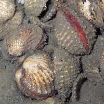

|
|
| bivalves text index | photo index |
| Phylum Mollusca > Class Bivalvia |
| Ark
clams Family Arcidae updated May 2020
Where seen? Among our favourite seafood, ark clams are still seen on some undisturbed Northern shores. In Singapore, they are also called 'see-ham'. On some shores, some species can still be found in large groups. Usually on muddy shores where freshwater streams reach the sea. What are ark clams? Ark clams belong to Family Arcidae. There are 200 species of ark clams, many of them eaten extensively by people everywhere. Features: 3-5cm. The two-part shell is sturdy and often squarish. Some species have clear ribs, others may be smooth. Members of this family of clams have a straight hinge with many equal-sized teeth, called the taxodont hinge. Some species of ark clams have shells covered in little brown hairs (called the periostracum). Some species burrow in the mud or sand or simply lie on the surface in heaps. Others live alone attached under stones. Some species produce byssus threads to attach themselves to hard surfaces. Unlike most other bivalves, some ark clam species have bodies that are orange or reddish. This is due to the presence of haemoglobin, the same substance that colours our own blood red too. Haemoglobin assists in transporting oxygen within the body and help ark clams thrive in oxygen-poor habitats. What do they eat? Like most other bivalves, ark clams are filter feeders. At high tide, they open their shells a little. They then generate a current of water through the shell and sieve out the food particles with enlarged gills. When the tide goes out, they clamp up their shells tightly with a strong muscle to prevent water loss. Human uses: Ark clams are relished in many local favourites such as fried kway teow and laksa. However, ark clams may be affected by red tide and other harmful algal blooms. They are also linked to cholera, hepatitis A and dysenteric shellfish poisoning. Ark clams are farmed in some places for sale as seafood. Status and threats: None of our ark clams are listed among the threatened animals of Singapore. However, like other creatures of the intertidal zone, they are affected by human activities such as reclamation and pollution. Trampling by careless visitors and over-collection can also affect local populations of young clams. |
| Some Ark clams on Singapore shores |
 'See-ham' |

| Family
Arcidae recorded for Singapore from Tan Siong Kiat and Henrietta P. M. Woo, 2010 Preliminary Checklist of The Molluscs of Singapore. ^from WORMS +from The Biodiversity of Singapore, Lee Kong Chian Natural History Museum.
|
Links
References
|